貓心臟病（一）：介紹與分類
原標題：Feline Heart Disease: Introduction and Classification
主講：Etienne Côté DVM, DACVIM (Cardiology), FASE（Atlantic Veterinary College, UPEI，加拿大）｜Session 1，09:00–10:30｜FASAVA 2026｜場次 05
目前只有講義，還沒有錄音。講者口述、Q&A 與 2026 未發表資料的細節，等錄音到了再補到第 10 節，並以 🎤 標示。
⭐ 本場重點
- 貓的心臟病 96% 是 HCM；看起來健康的貓約 15% 有心臟病，先天性心臟病只有 0.15%
- 心肌病依 ACVIM 2020 共識以表型分類：HCM、RCM、DCM、ARVC、非特異性（NSCM，取代舊稱 UCM）
- HCM 是排除性診斷：先排除高血壓、甲亢、肢端肥大症、主動脈狹窄、心跳過快、暫時性心肌增厚等擬表型
- 分期 A → B1 → B2 → C → D：B1 和 B2 的分界是心房擴大程度與其他高風險特徵
- 暫時性心肌增厚（TMT）：年輕、有誘發事件、肌鈣蛋白很高、心房不太大，預後遠好於 HCM，但只能事後回頭確診
場次資訊
▾講者與一整天的貓心臟課程（4）
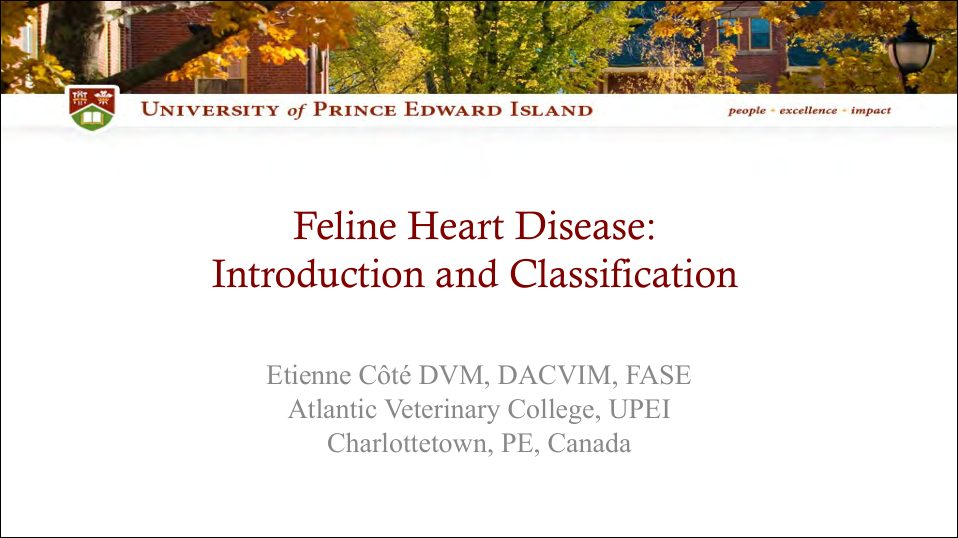

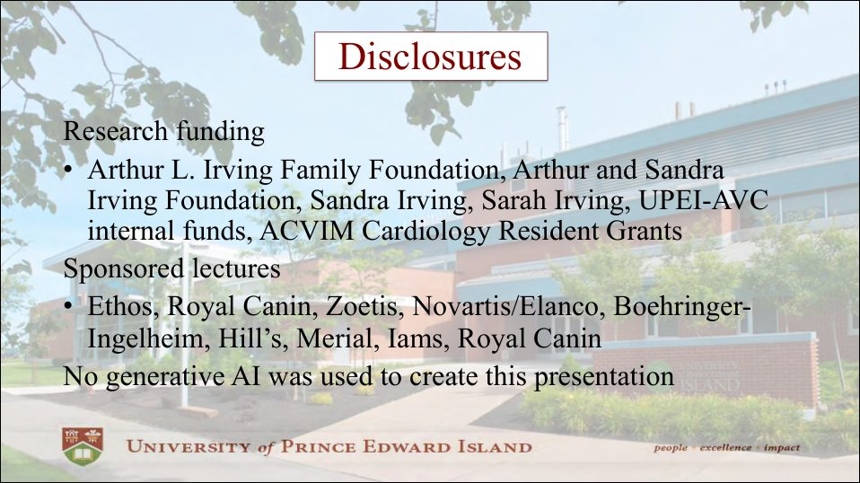
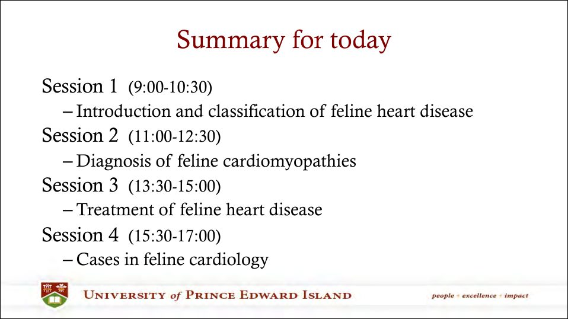
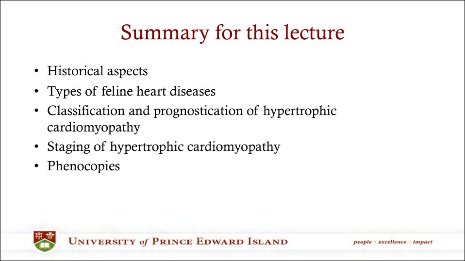
- 講者：Etienne Côté，DACVIM（心臟）、FASE，加拿大愛德華王子島大學大西洋獸醫學院（AVC-UPEI）。他是 2020 ACVIM 貓心肌病共識的作者之一，也是《Ettinger 內科學》與 Clinical Veterinary Advisor 的主編。💡
- 感謝 FASAVA 籌備會呂大立醫師（台北中安動物醫院）。講義註明：這份簡報沒有使用生成式 AI。
| 場次 | 時間 | 主題 |
|---|---|---|
| Session 1（本篇） | 09:00–10:30 | 貓心臟病介紹與分類 |
| Session 2 | 11:00–12:30 | 貓心肌病的診斷（講義已存，下一篇） |
| Session 3 | 13:30–15:00 | 貓心臟病的治療 |
| Session 4 | 15:30–17:00 | 貓心臟病例討論 |
1. 貓心臟學的演進
▾從「貓不會得心臟病」到一萬多篇文獻（6–12）
| 年代 | 里程碑 |
|---|---|
| 1968 | Neil Harpster（VMD，後來成為 DACVIM 心臟專科醫師）還是學生時被教「貓不會得心臟病」 |
| 1970 | Liu 等，JAVMA：貓的鬱血性心衰竭（早期病理描述） |
| 1987 | Pion 等，Science：低血漿牛磺酸造成可逆的 DCM |
| 1992 | Atkins 等，JAVMA：74 隻特發性 HCM 貓的危險因子、症狀與存活 |
| 2000s 起 | 專書、ACVIM 2020 共識、REVEAL 研究（HCM 與看似正常貓的長期預後） |
| 今天 | PubMed 搜尋 "feline heart" 有 超過 11,500 篇 |
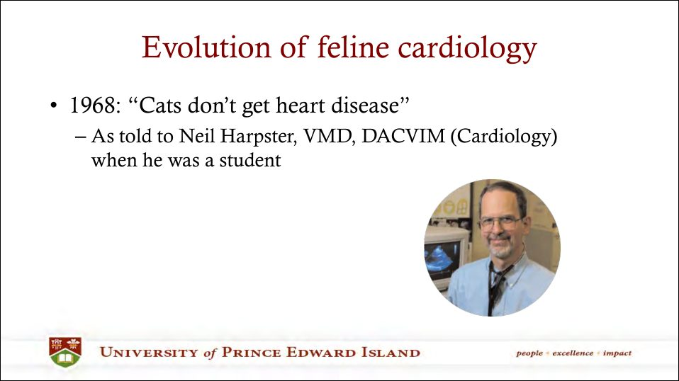
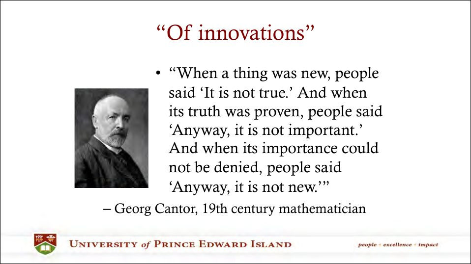
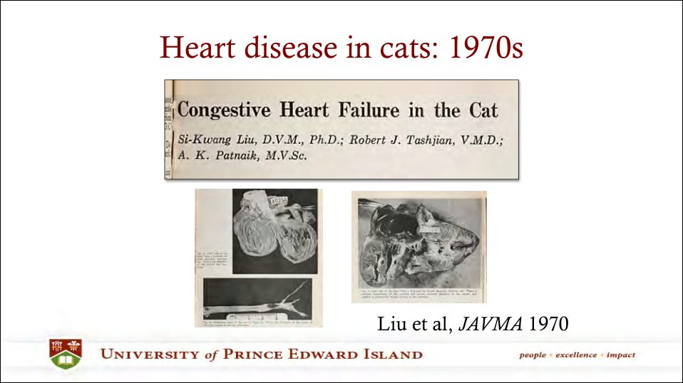
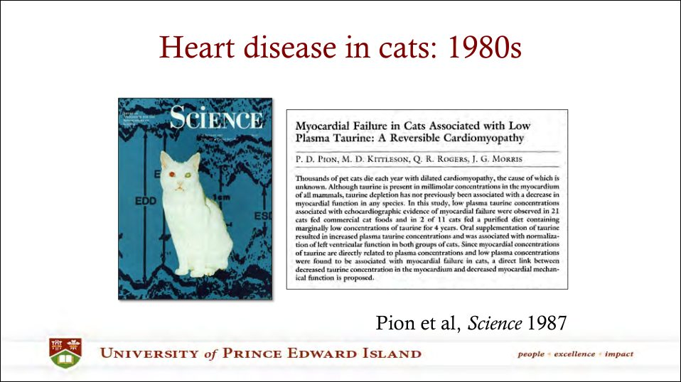
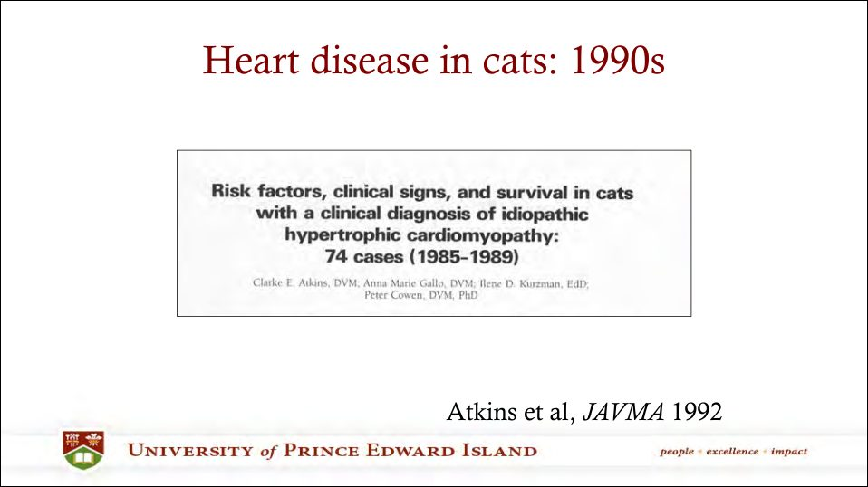
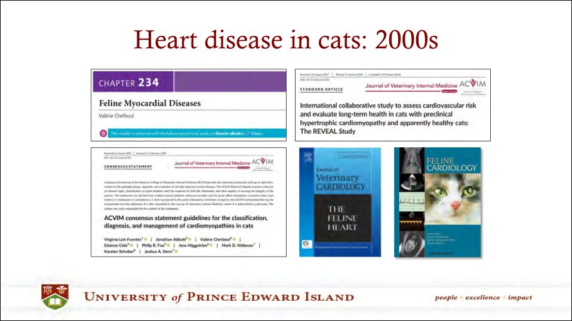
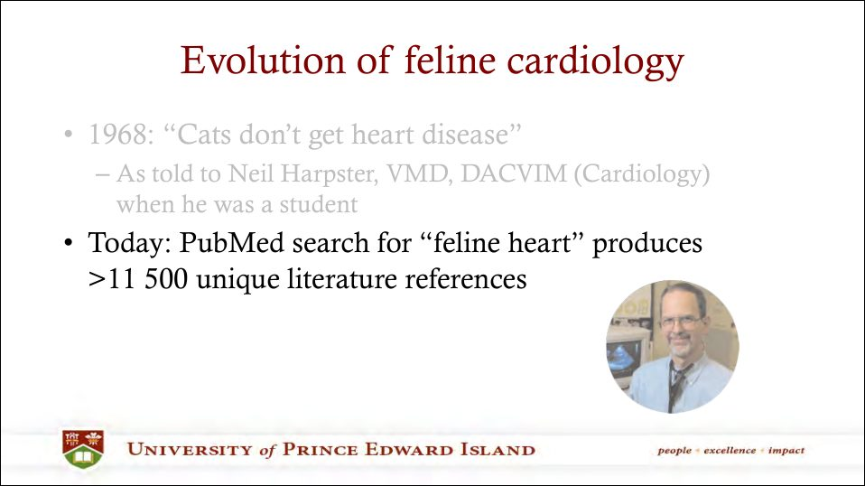
講者引用數學家 Georg Cantor 的話來描述新觀念被接受的三個階段：一開始被說「不是真的」，被證實後被說「不重要」，重要性無法否認後又被說「這也不是新東西」。
💡 1987 年之前，貓 DCM 很常見；發現與牛磺酸有關、商業飼料補足牛磺酸之後，貓 DCM 大幅減少，所以現在看到的貓心肌病絕大多數是 HCM。自製飼料或素食飼料的貓仍要想到牛磺酸缺乏。
2. 貓心臟病的種類與盛行率
▾三大類（13）
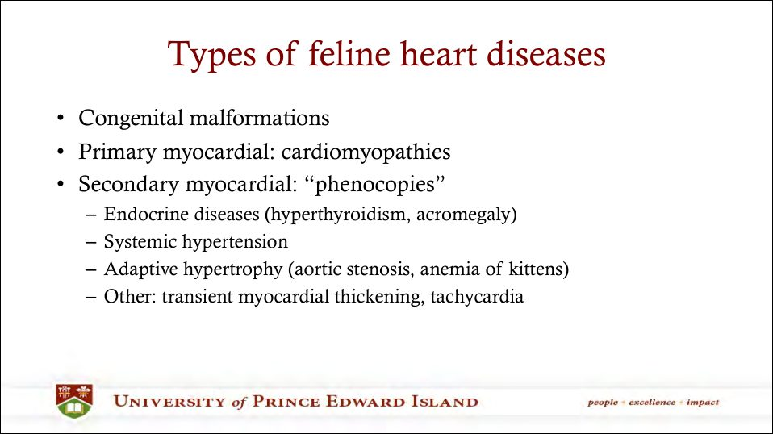
- 先天性畸形
- 原發性心肌病：心肌病（cardiomyopathies）
- 續發性心肌病：「擬表型」（phenocopies）
- 內分泌：甲狀腺機能亢進、肢端肥大症
- 全身性高血壓
- 適應性肥大：主動脈狹窄、幼貓貧血
- 其他：暫時性心肌增厚、心跳過快
看起來健康的貓：15% 有心臟病，其中 96% 是 HCM（14、19）
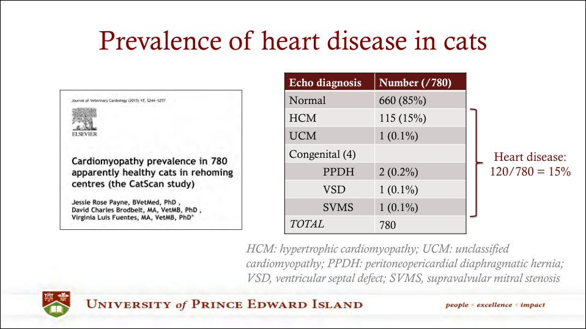
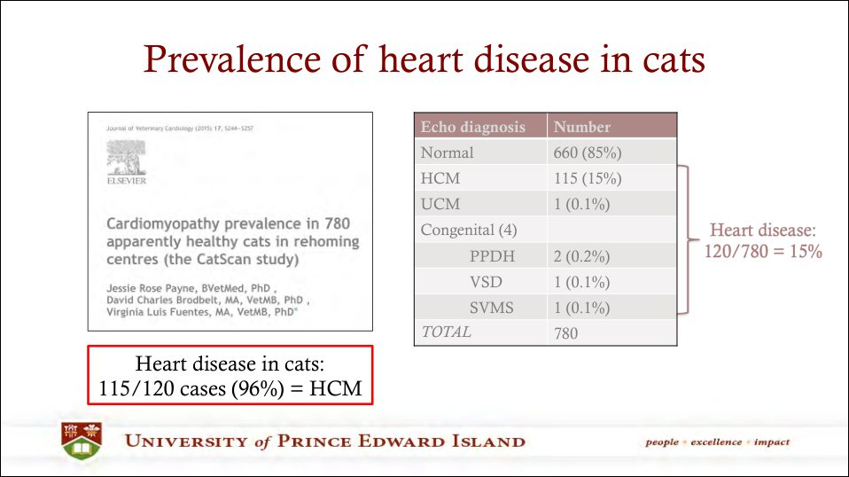
| 心臟超音波診斷 | 隻數（/780） |
|---|---|
| 正常 | 660（85%） |
| HCM | 115（15%） |
| UCM（未分類心肌病） | 1（0.1%） |
| 先天性：腹膜心包膜橫膈疝氣（PPDH） | 2（0.2%） |
| 先天性：心室中膈缺損（VSD） | 1（0.1%） |
| 先天性：瓣膜上二尖瓣狹窄（SVMS） | 1（0.1%） |
有心臟病 120/780 = 15%；其中 115/120（96%）是 HCM。
💡 這些都是「看起來健康」的貓，大部分是無症狀的 B1 期。臨床意義：門診裡每 7 隻貓就可能有 1 隻有 HCM，聽診正常不代表沒有。
先天性心臟病（15–18）
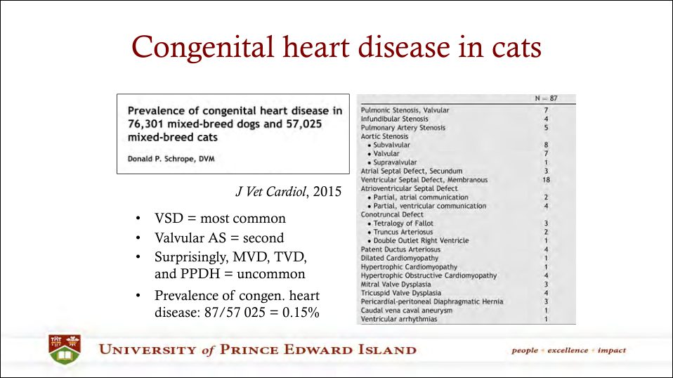
- 貓先天性心臟病盛行率：87/57,025 = 0.15%。
- 最常見 VSD，其次是瓣膜性主動脈狹窄；意外的是二尖瓣發育不良（MVD）、三尖瓣發育不良（TVD）和 PPDH 都不常見。
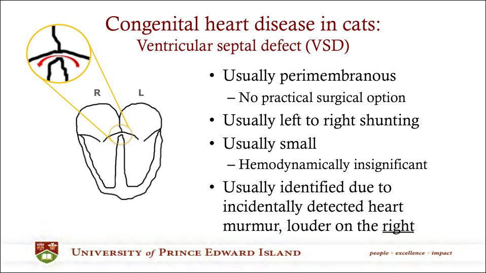
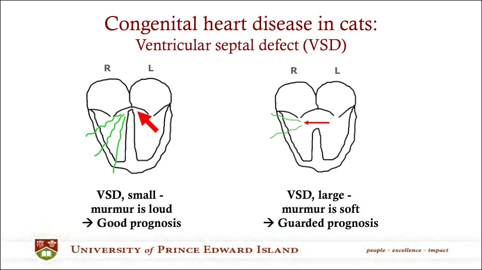
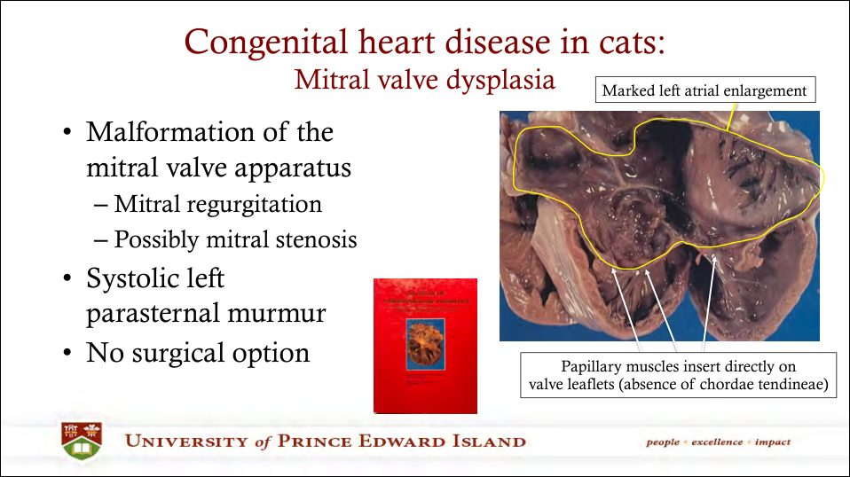
VSD（16–17）
- 通常在膜周部，沒有實際可行的手術
- 通常左到右分流、通常洞很小、血行動力學上不重要
- 多半是因為偶然聽到雜音才發現，雜音在右側比較大聲
- 雜音大聲 = 洞小 = 預後好；雜音小聲 = 洞大 = 預後保留
二尖瓣發育不良（18）
- 二尖瓣裝置的畸形 → 二尖瓣逆流，可能合併二尖瓣狹窄
- 左胸骨旁收縮期雜音
- 沒有手術選項
💡 VSD 雜音在右側最大聲，是因為血流從左心室噴進右心室、朝向右胸壁。小洞兩側壓差大、流速快，所以雜音響亮；大洞兩側壓力接近、流速慢，雜音反而小聲，但分流量大、容易造成左心容積負荷與心衰竭。
3. 心肌病的定義與表型分類
▾依據：ACVIM 2020 共識（20–21）
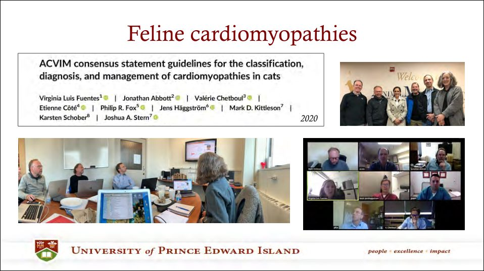
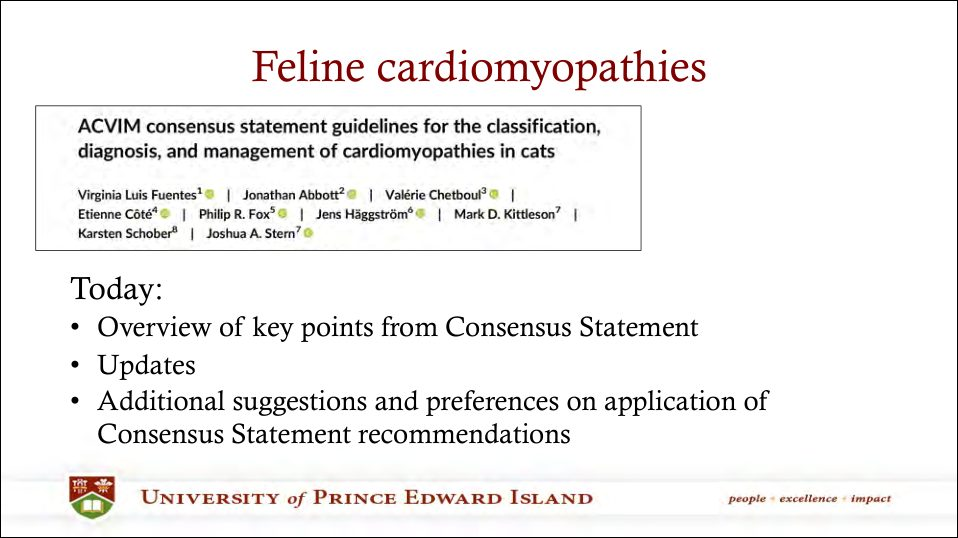
Luis Fuentes, Abbott, Chetboul, Côté, Fox, Häggström, Kittleson, Schober, Stern：ACVIM consensus statement guidelines for the classification, diagnosis, and management of cardiomyopathies in cats（JVIM 2020）。本場內容：共識的重點、之後的更新、講者自己應用共識時的建議與偏好。
定義（22）
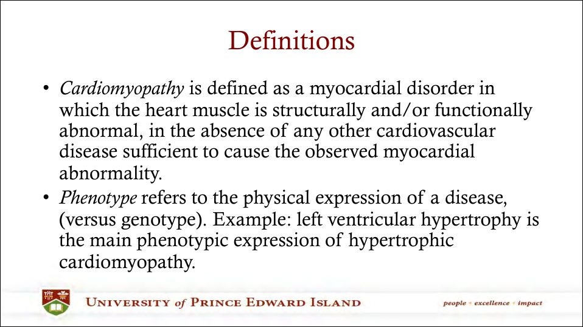
- 心肌病：心肌結構及／或功能異常，而且沒有其他足以造成這種異常的心血管疾病。
- 表型（phenotype）：疾病的外在表現（相對於基因型）。例如左心室肥厚就是 HCM 的主要表型。
✍️ 筆記 貓的心肌病目前大多不知道病因。人已經找到很多致病基因，貓只找到三種。
💡 一般說的三種是：緬因貓 MYBPC3 A31P、布偶貓 MYBPC3 R820W、Sphynx ALMS1 G3376R（Meurs 2021）；還有零星的 MYH7 等單一病例報告。人的 HCM 已知有十多個肌小節基因、上千個變異。正因為貓多數病因不明，共識改用「看起來像什麼」（表型）分類，而不是用病因分類；基因檢測陽性也不等於一定發病，陰性更不能排除 HCM，仍要靠超音波。
五種表型（24–28）
| 表型 | 定義（講義） |
|---|---|
| HCM 肥厚型 | 左心室壁增厚，且沒有其他可造成這種程度肥厚的疾病（如先天性主動脈狹窄、全身性高血壓）。常見動態左心室流出道阻塞及二尖瓣、乳頭肌異常。排除性診斷：排除其他左心室增厚原因後，剩下的才是 HCM。 |
| RCM 限制型 | 心肌型：心室腔與心室壁大小正常，因舒張功能受損而心房擴大。 心內膜型：心內膜疤痕橋接心室中膈與左心室游離壁，可能有左心室中段阻塞或心尖動脈瘤，合併心房擴大。 |
| DCM 擴張型 | 左心室收縮功能異常，心室逐漸擴大，最後心房也擴大。 |
| ARVC 致心律不整性（右心室） | 右心室與右心房嚴重擴張，常有右心室收縮功能異常、右心室壁變薄；心律不整很常見。 |
| NSCM 非特異性 | 不符合上面任何經典類別，就寫「非特異性表型」＋描述形態與功能。以前叫「未分類心肌病（UCM）」。 |
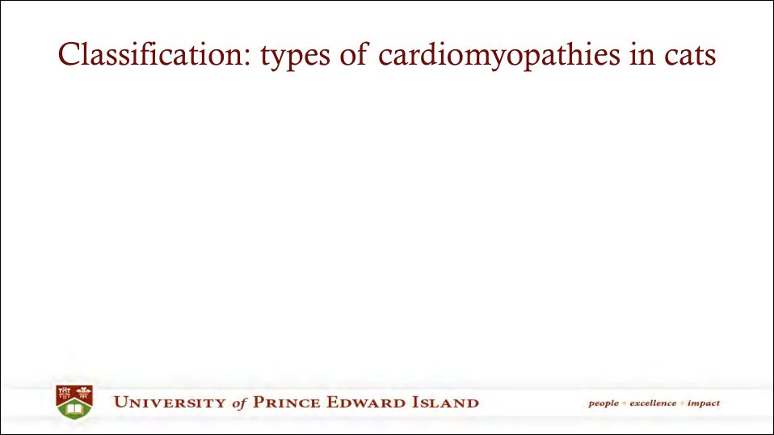
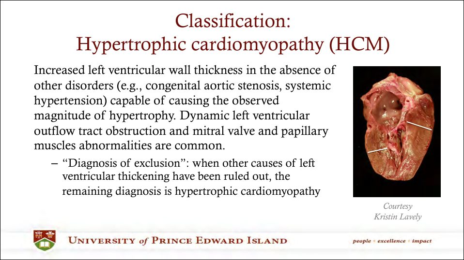
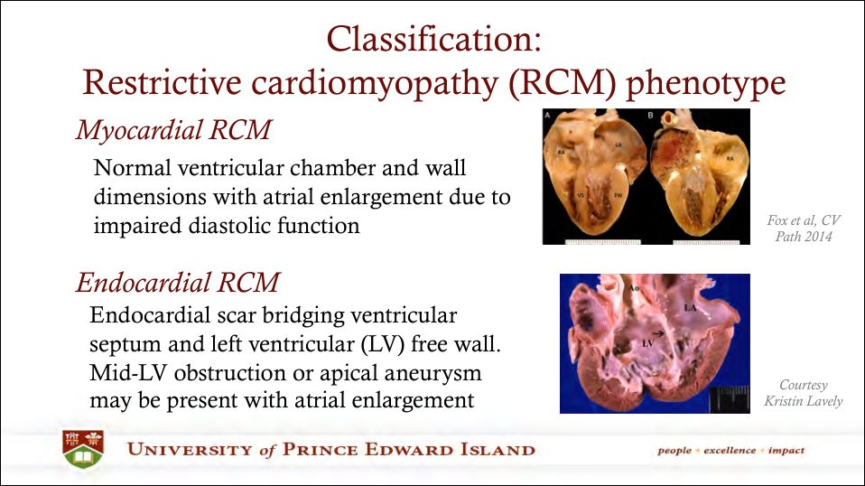
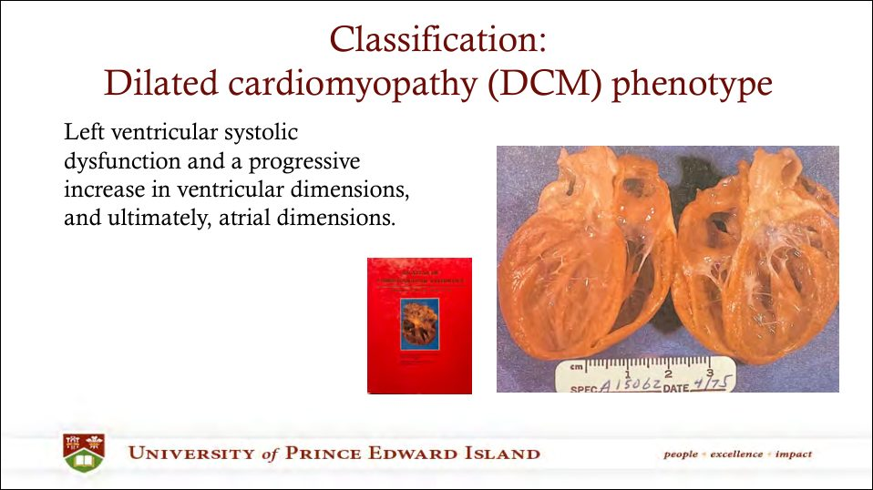
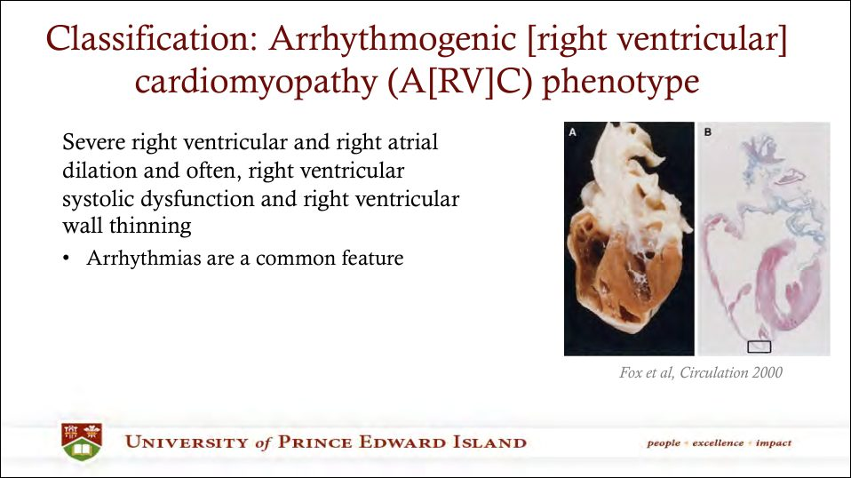
✍️ 筆記 ARVC 在貓少見；在狗，拳師犬（Boxer）比較常見。
💡 拳師犬 ARVC 和 STRN 基因變異有關，典型表現是左束支傳導阻滯型（來自右心室）的心室早期收縮／心室心搏過速、昏厥或猝死，很多狗心臟大小正常；篩檢靠 24 小時 Holter（VPC 數量）。貓的 ARVC 則多以右心擴大、右心衰竭（胸腹水）和心律不整表現。
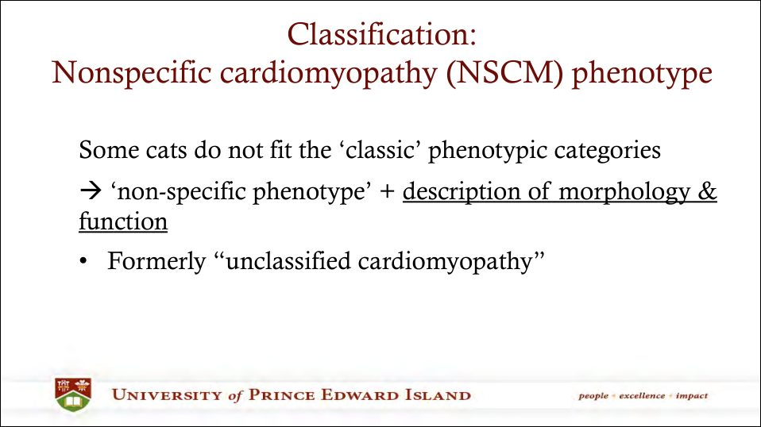
貓分類的困難（29–30）
- 病因通常不明
- 每一類表型內部差異很大
- 不同表型之間有重疊
- 心臟會隨時間重塑，表型可能改變（例如 HCM 末期變成收縮功能差、心室變薄）
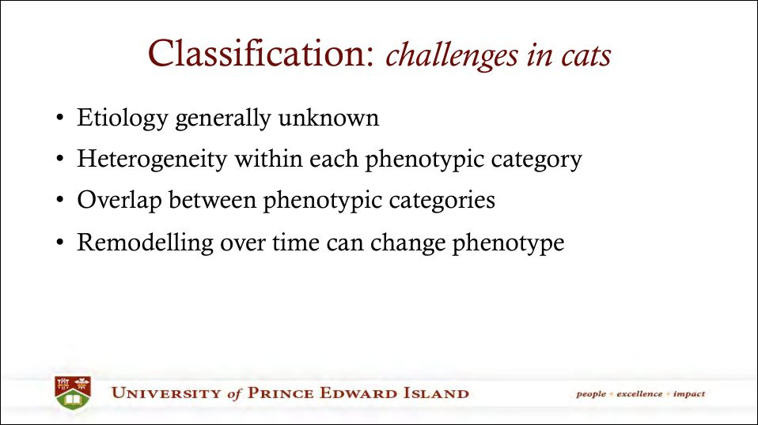
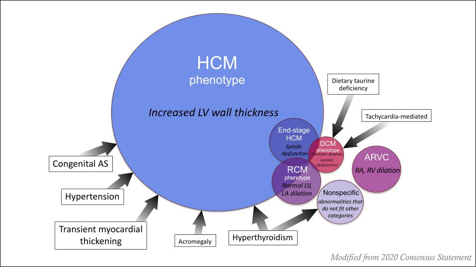
圖的重點：造成「HCM 表型」的箭頭有先天性主動脈狹窄、高血壓、暫時性心肌增厚、肢端肥大症、甲狀腺機能亢進、心跳過快造成的假性肥厚；DCM 表型則可能來自牛磺酸缺乏、心跳過快誘發心肌病、末期 HCM。
4. HCM 分期（A–D）
▾分期總覽（31）
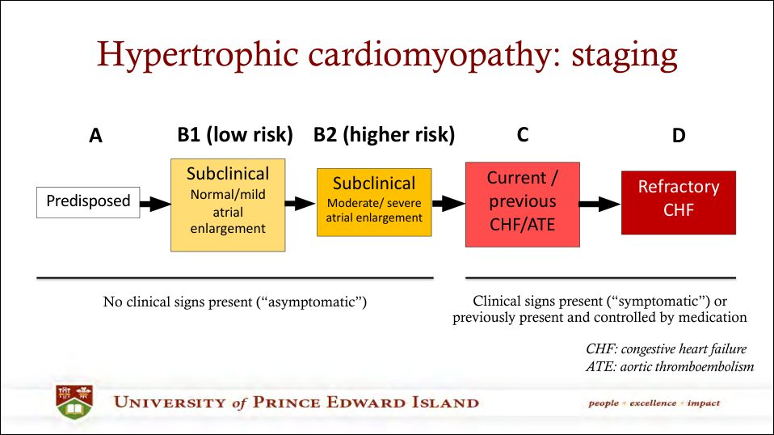
| 分期 | 定義 | 症狀 |
|---|---|---|
| A | 易發（predisposed），心臟還正常 | 無症狀 |
| B1（低風險） | 無症狀，心房正常或輕度擴大 | |
| B2（較高風險） | 無症狀，心房中度到重度擴大 | |
| C | 目前或曾經有 CHF 或 ATE（主動脈血栓栓塞） | 有症狀，或曾有症狀、用藥控制中 |
| D | 頑固性 CHF |
誰算 A 期？誰是 B2？（32–33）
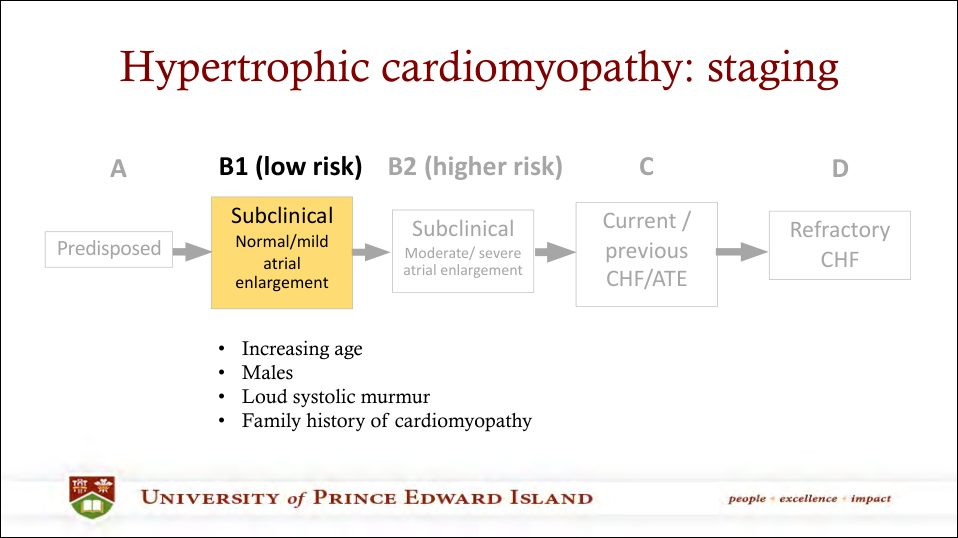
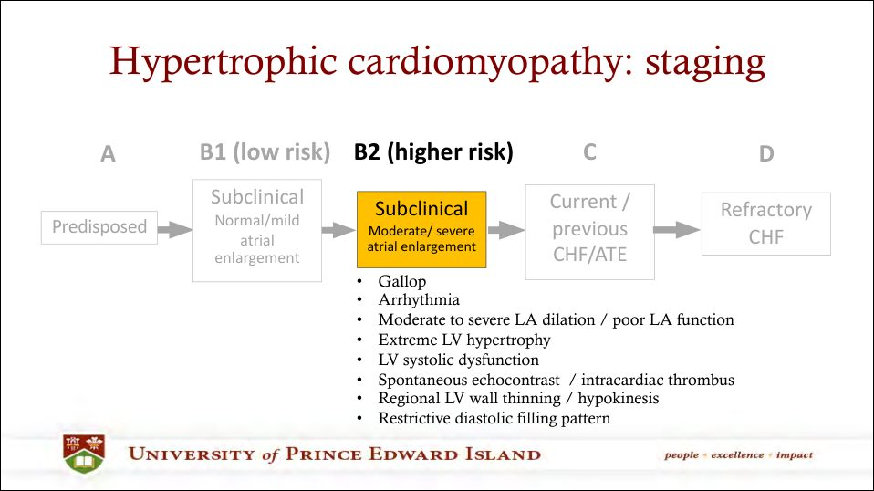
易發因素（32）
- 年紀增加
- 公貓
- 大聲的收縮期雜音
- 心肌病家族史
B2 高風險特徵（33）
- 奔馬律
- 心律不整
- 中度到重度左心房擴大／左心房功能差
- 極度左心室肥厚
- 左心室收縮功能異常
- 自發性顯影（煙霧）／心內血栓
- 局部左心室壁變薄／運動減弱
- 限制型舒張充填模式
💡 分期的用處在治療決策：依 2020 共識，B1 通常不用藥、定期追蹤；B2 因為 CHF 與 ATE 風險較高，建議考慮抗血栓藥（clopidogrel）；C 期加上利尿劑等。治療細節是 Session 3 的主題，屆時以講者說法為準。「極度肥厚」在共識中大約指左心室壁 ≥ 9 mm。
5. 擬表型：長得像 HCM 的其他病
▾Phenocopy = 心肌病的「雙胞胎」（34）
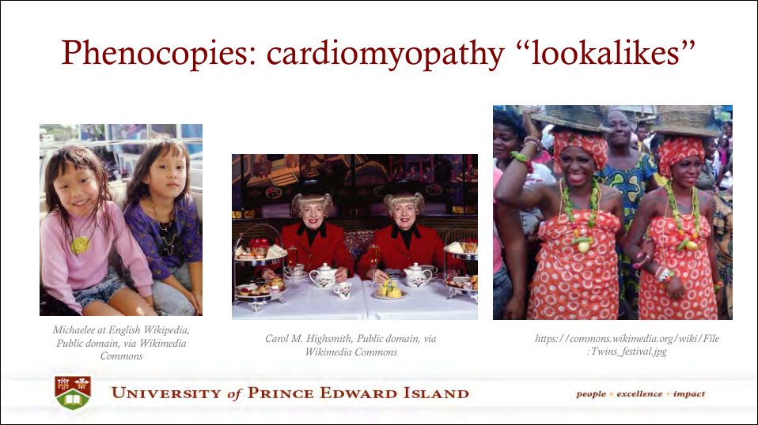
外表（超音波上的左心室增厚）一樣，原因不一樣。很多擬表型可逆，治好原發病心肌就會變薄，這是它們和 HCM 最重要的差別。
高血壓性心臟病（35–36）
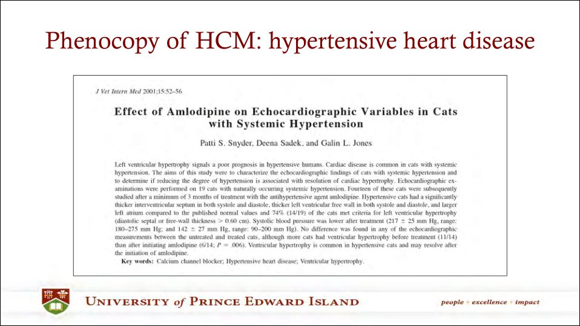
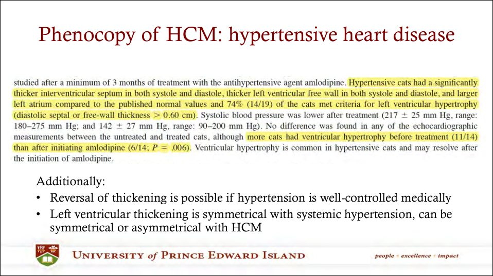
- 高血壓貓的心室中膈、左心室游離壁（收縮與舒張期）比正常參考值厚，左心房也較大；74%（14/19）符合左心室肥厚（舒張期中膈或游離壁 > 6.0 mm）。
- 用 amlodipine 之後，左心室肥厚的貓從 11/14 降到 6/14（P = .006）。
- 血壓控制好，增厚可以逆轉。
- 高血壓造成的左心室增厚是對稱的；HCM 可能對稱，也可能不對稱。
增厚的分布：對稱還是不對稱？（37）
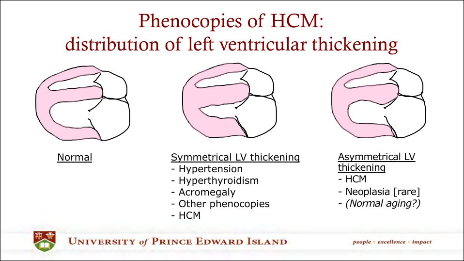
| 對稱性增厚 | 不對稱增厚 |
|---|---|
| 高血壓、甲狀腺機能亢進、肢端肥大症、其他擬表型、HCM | HCM、腫瘤（罕見）、（正常老化？） |
💡 所以「不對稱」偏向 HCM，但「對稱」不能排除 HCM，只是提醒要先找擬表型。老貓的室中膈基部常突起（sigmoid septum／基部中膈隆起），可能就是講義上的「正常老化？」。
甲狀腺機能亢進（38）
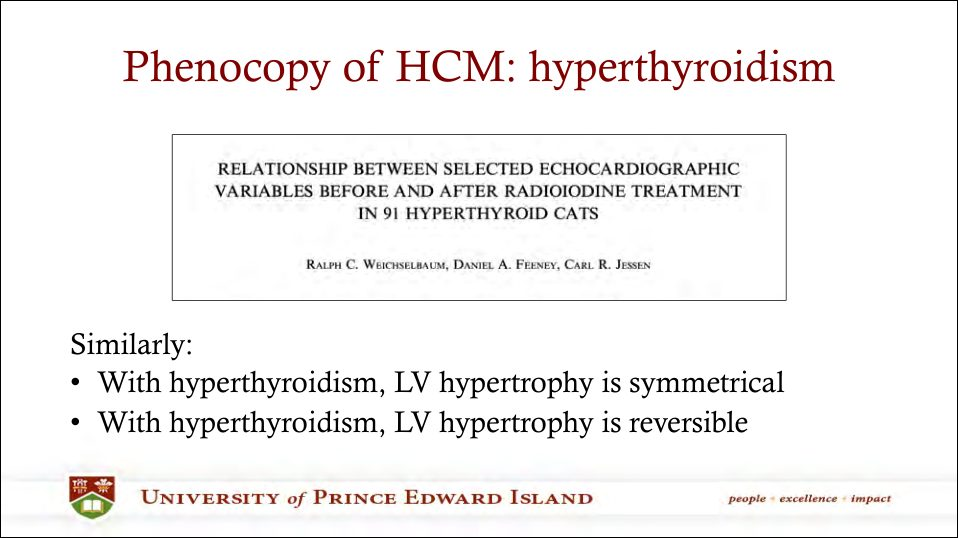
Weichselbaum, Feeney, Jessen（91 隻甲亢貓碘-131 治療前後的心臟超音波）：和高血壓一樣，甲亢造成的左心室肥厚是對稱而且可逆的。
💡 第 8 節講者的流程：6 歲以上的貓看到左心室增厚就要驗 T4。甲亢的完整處理見 Texas 18 貓甲狀腺機能亢進。
心跳過快造成的假性肥厚（39–42）
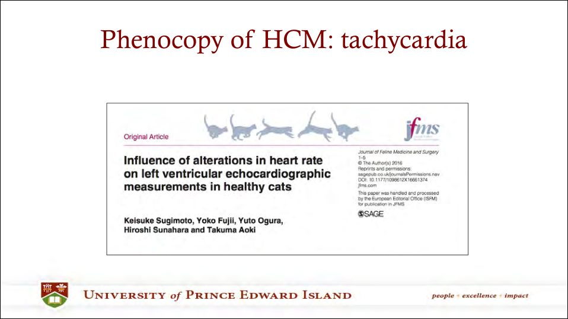
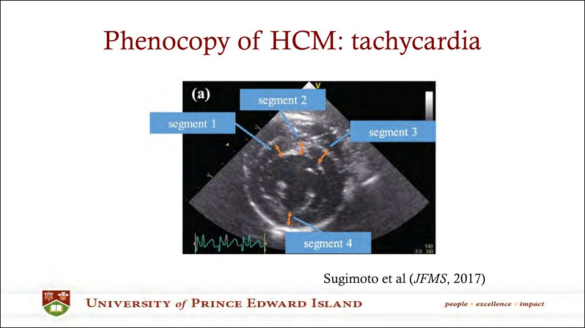
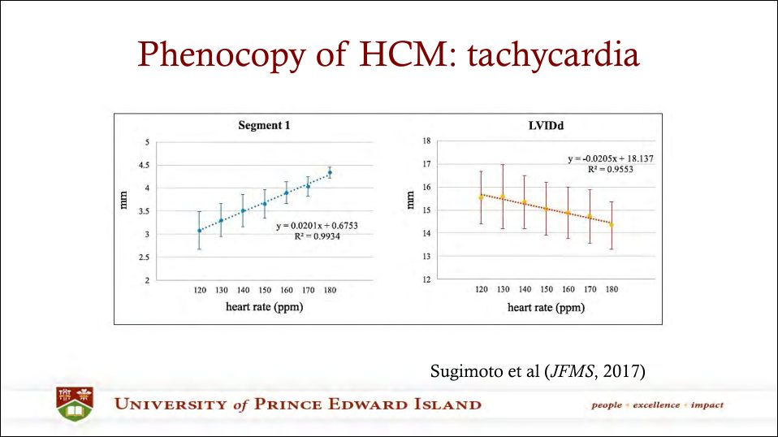
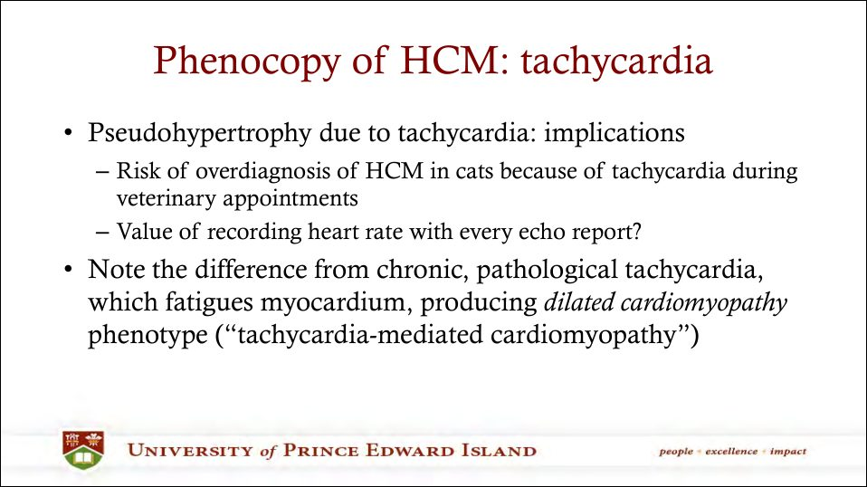
💡 從圖上的回歸線換算：心跳 120 → 180 bpm，第 1 段壁厚約 3.1 → 4.3 mm（每 bpm +0.02 mm），舒張末期左心室內徑約 15.7 → 14.4 mm。心跳快時舒張期短、心室充填少，心室腔變小、壁看起來就變厚。
- 過度診斷 HCM 的風險：貓在醫院緊張心跳快。
- 講者建議：每份心臟超音波報告都記錄心跳？
- 要和慢性、病理性心跳過快區分：長期心跳過快會讓心肌疲乏，產生 DCM 表型（心跳過快誘發心肌病）。短暫心跳快 → 看起來像 HCM；長期心跳快 → 變成 DCM。
6. 暫時性心肌增厚（TMT）
▾是什麼（43）
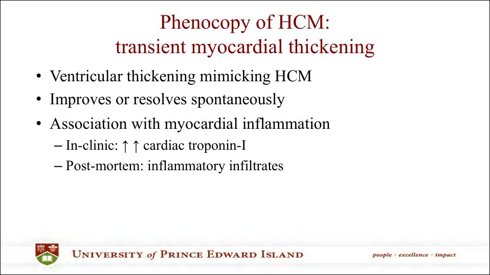
- 心室增厚，看起來就像 HCM
- 會自行改善或消失
- 和心肌發炎有關：臨床上 心肌鈣蛋白 I（cTnI）大幅上升；死後病理可見發炎細胞浸潤
Novo Matos 2018 回溯研究（44–48）
- 21 隻左心室壁 ≥ 6 mm 且有 CHF、兩者後來都消失 → TMT
- 21 隻左心室壁 ≥ 6 mm 且有 CHF、持續存在 → HCM
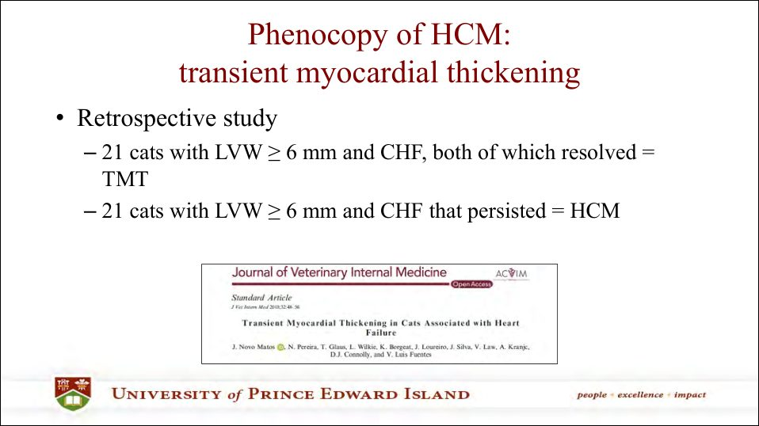
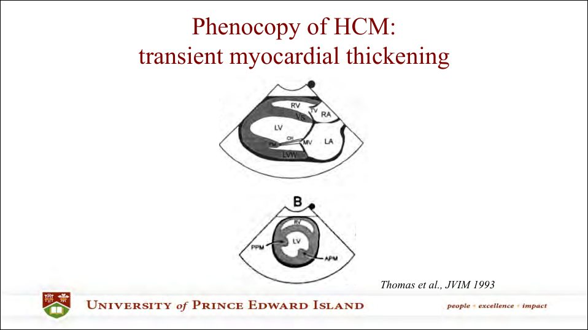
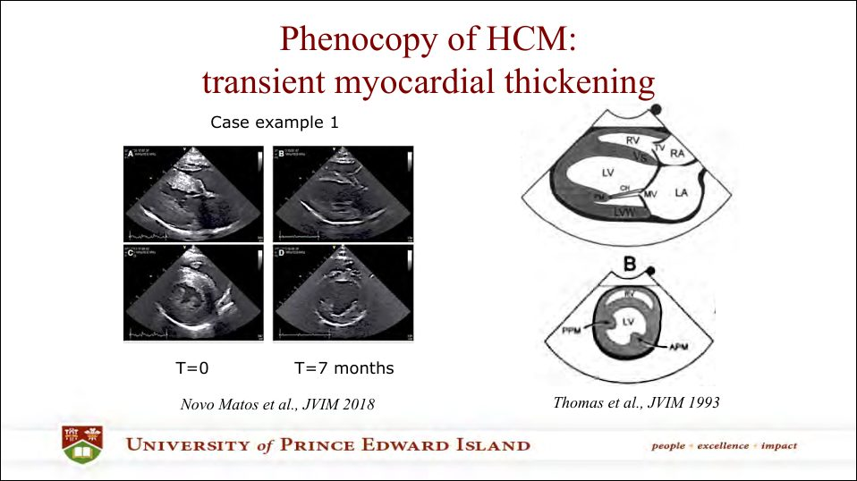
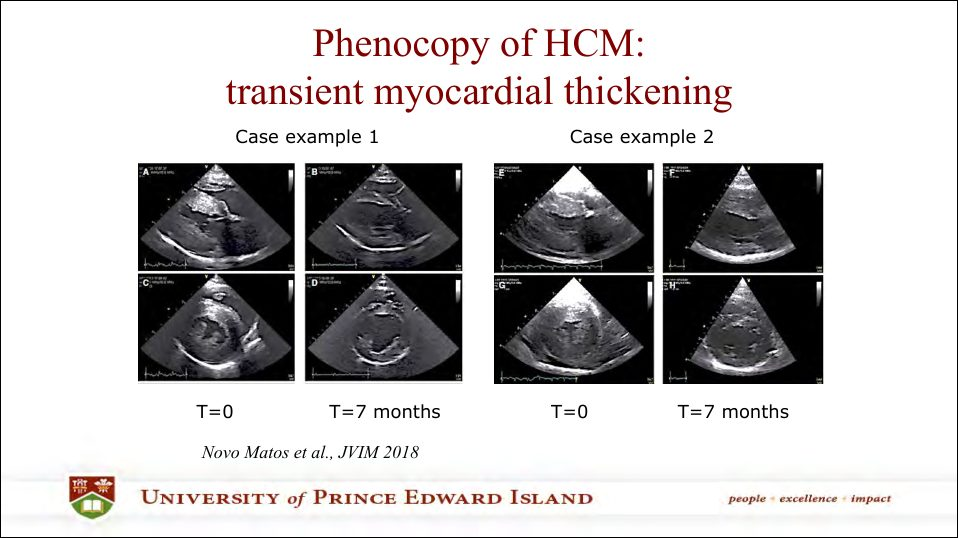
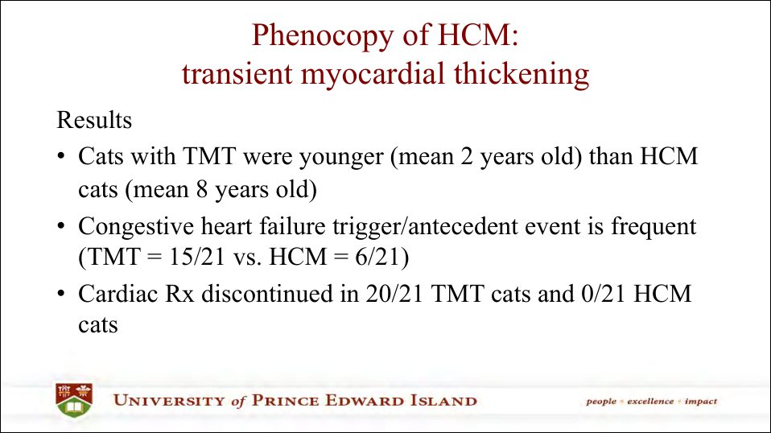
| TMT | HCM | |
|---|---|---|
| 平均年齡 | 2 歲 | 8 歲 |
| CHF 前有誘發／先行事件 | 15/21 | 6/21 |
| 停掉心臟藥 | 20/21 | 0/21 |
| 誘發事件：全身麻醉 | 33% | 5% |
| 誘發事件：車禍 | 10% | 0% |
臨床特點（49–50）
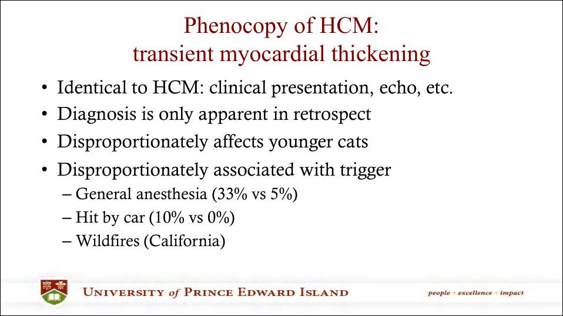
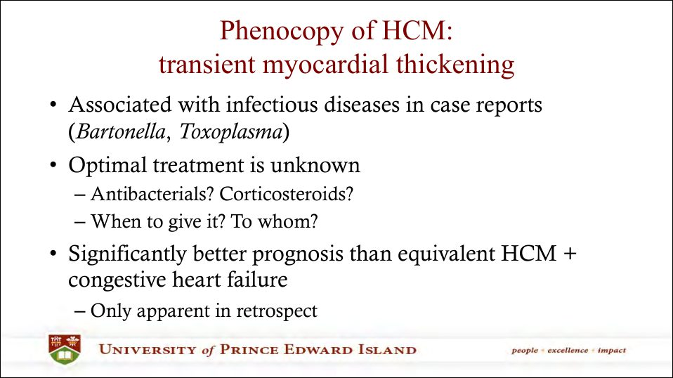
- 臨床表現、心臟超音波都和 HCM 一模一樣；只有事後回頭才能確診
- 不成比例地多見於年輕貓、多有誘發事件（麻醉、車禍、加州野火）
- 個案報告與感染有關：Bartonella、Toxoplasma
- 最佳治療不明：抗菌藥？類固醇？什麼時候給？給誰？
- 預後明顯優於同樣有 CHF 的 HCM，但也是事後才知道
💡 這一點很實際：年輕貓麻醉、輸液或車禍後突然 CHF，超音波看起來像 HCM，不要馬上告訴飼主「這是一輩子的病、預後很差」。先治 CHF，量 cTnI，幾週到幾個月後重新做超音波，再決定能不能減藥、停藥。
2026 更新：116 隻貓（未發表）（51）
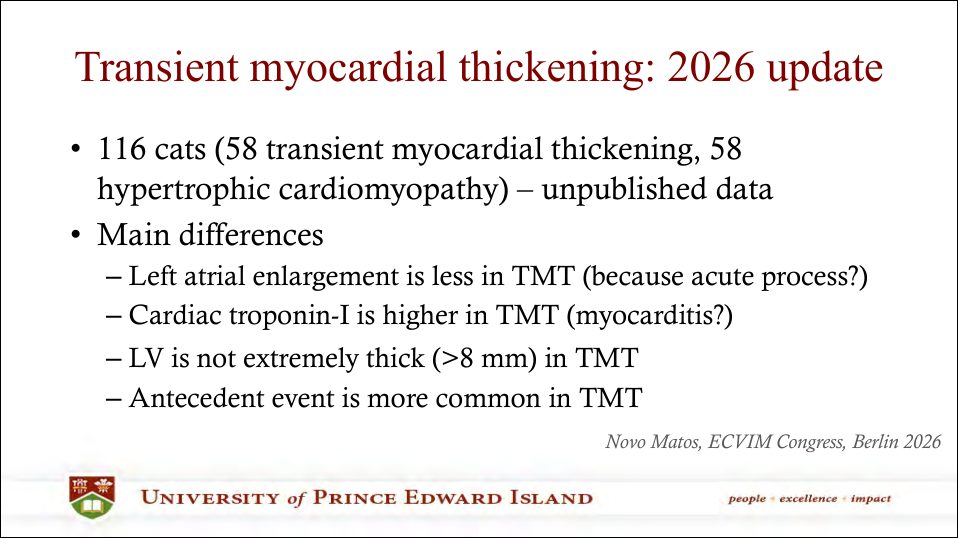
| 線索 | 偏向 TMT | 講義推測的原因 |
|---|---|---|
| 左心房擴大 | 比較輕 | 急性過程，心房還來不及變大？ |
| 心肌鈣蛋白 I | 比較高 | 心肌炎？ |
| 左心室厚度 | 不會極度增厚（不到 > 8 mm） | |
| 先行事件 | 比較常見 |
7. 病例：1 歲家貓長毛
▾臨床表現與工作診斷（52–55）
- 床邊胸腔超音波（POCUS）：左心室瀰漫性中度增厚；左心房擴大，估計 LA:Ao 約 2.5:1；大量 B 線。
- 工作診斷：HCM 造成的左心鬱血性心衰竭。
- 病程：氧氣、靜脈利尿劑等處置下仍快速惡化、嚴重呼吸困難 → 安樂死。
病理（56–59，Dr. Shannon Martinson 提供）
講者：「我很驚訝！我原本預期會看到 HCM 的肥大、肌纖維排列紊亂和纖維化。」
💡 這個病例把第 6 節串起來：1 歲（TMT 平均 2 歲）、左心室中度而非極度增厚、病理是發炎。生前能做的區分是量 cTnI；但就算懷疑 TMT，急性期的 CHF 處置還是一樣。
8. 排除擬表型的實用流程
▾在下「HCM」診斷前，逐題問自己（61–62）
| 問題 | 如果「是」 |
|---|---|
| 超音波上有沒有其他造成增厚的證據？ ・左心室流出道阻塞（如主動脈狹窄） ・左心室心肌回音不均勻、斑駁（如腫瘤浸潤） | 那就是擬表型，不是 HCM |
| 貓是否小於 6 歲？ | 是 → 甲亢造成增厚的機會很低；≥ 6 歲就驗 T4 |
| 貓有沒有高血壓？ | ・先排除情境性高血壓（白袍效應），非常常見 ・做眼底檢查找高血壓性視網膜病變 ・找原發病：慢性腎病、甲亢 |
| 有沒有難以控制的糖尿病？ | 考慮肢端肥大症 |
💡 再加上前面兩點：記錄心跳（心跳快可能假性增厚）、年輕貓有誘發事件時想到 TMT，量 cTnI 並安排回診超音波。肢端肥大症的篩檢（IGF-1）見 Texas 23 貓生長激素過多症。
9. 課前思考題
▾- 講者說「每份超音波報告記錄心跳」後面加了問號：心跳多快以上，壁厚的判讀要打折？有沒有建議的鎮靜方式（如 gabapentin、butorphanol）會影響壁厚？
- TMT 的治療：講者會不會給類固醇或 doxycycline？cTnI 多高要懷疑心肌炎？
- B2 的判定：左心房「中度到重度」擴大，講者用 LA:Ao 還是左心房直徑（mm）當切點？
- 對稱性增厚的老貓，T4 正常、血壓正常，還需要驗 IGF-1 嗎？